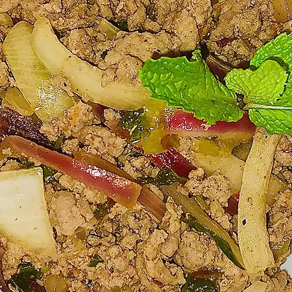

ThaiLarb

Thai Larb Salad
Can be served as an appetizer, but I serve it as a main dish with pot stickers and fresh pineapple. Serve warm on whole romaine hearts.
Ingredients
- ¾ cup water
- 1½ pounds ground turkey breast
- ⅓ cup green onions, chopped, or more to taste
- ⅓ cup chopped fresh cilantro, or more to taste
- >¼ cup chopped fresh mint, or more to taste
- ¼ cup lime juice
- 3 tablespoons fish sauce
- 2 teaspoons dried Thai chile pepper flakes
Steps
- Bring water to a simmer in a large skillet over medium heat. Add turkey;
cook and stir until no longer pink and and it registers 165 degrees F (74 degrees C)
on an instant-read thermometer, 5 to 7 minutes. Remove from heat.
- Stir green onions, cilantro, mint, lime juice, fish sauce, and chile flakes into the ground turkey.
Back to Homepage